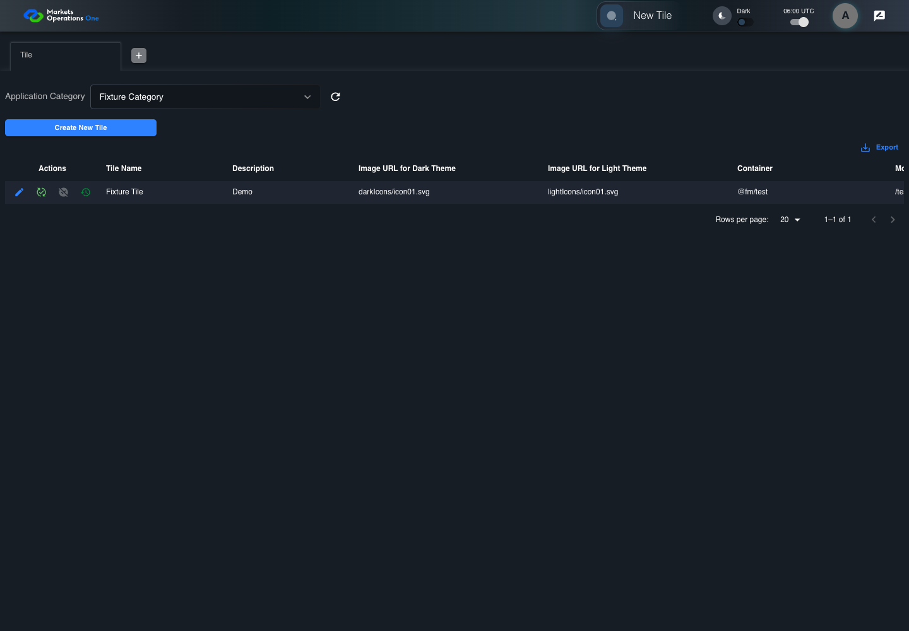

UI-ADM-TIL-012 actual administration UI with step evidence
PASS · application/run-050/ui-adm-til-012-actual-administration-ui-with-step-evidence-cddb6f164010-attempt-1 · ACTUAL_APPLICATION_LOCAL_SERVICES
Actual current React administration screens. Controlled browser login supplies UI-ADMIN-01 and TEST_OWNER, or the declared SUPER_USER. Controlled BFF routes return the case-declared records. Other controlled saves persist submitted field values. This run establishes frontend handling only. It does not execute BFF validation, storage, audit generation, or authorization.
2026-10-22T06:00:13.608Z to 2026-10-22T06:00:18.411Z
Assertions and result · Artifact manifest · Exact run inputs and source hashes
Result SHA-256:7f60b9e832a6412d26fc48fd8c68c5a4cafa807c1cccb9af96c7d560ef0c4ef6Machine observations
- ui-origin-admin-requests.json
9d464ffd24bcb7e0a168a865523a134774ee1f21d8dd66a79d4c6d5557be7eee
Screenshot capture: CAPTURED. Named frames: 6.
Step screenshot bindings: COMPLETE. 5/5 canonical steps have execution screenshots.
Bindings measure structural coverage only. They do not establish screenshot content quality or relevance.
Screenshot content review: NOT_REVIEWED. Recorded context: 0/6 frames. Identical image bytes: 0 repeated frames. Recorded context does not establish human visual review.
Canonical step timeline
Given Admin A is authenticated as fixture UI-ADMIN-01 with the case-specific permissions
Execution: PASSED.
1. step-01 Visible state after step 1: Given Admin A is authenticated as fixture UI-ADMIN-01 with the case-specific permissions
2026-10-22T06:00:15.233Z · 1440×1000
Step: /Users/lushevol/code/github/ratan-release-impact/workbench/tasks/ui-test-coverage-20261022/test-cases.md:8999
SHA-256:5b18e61c9d4c5c1f0cee1300bdcda34b1418a25c1a97509d35e55f2dac5d5abcAnd the Tile admin screen is open for UI-ADMIN-01; fixture record 101 is inactive and has Tile Name Fixture Tile; its owner is TEST_OWNER; Application Category Fixture Category is selected; the edit dialog has unsaved Tile Name Changed Tile
Execution: PASSED.2. step-02 Visible state after step 2: And the Tile admin screen is open for UI-ADMIN-01; fixture record 101 is inactive and has Tile Name Fixture Tile; its owner is TEST_OWNER; Application Category Fixture Category is selected; the edit dialog has unsaved Tile Name Changed Tile
2026-10-22T06:00:17.015Z · 1440×1000
Step: /Users/lushevol/code/github/ratan-release-impact/workbench/tasks/ui-test-coverage-20261022/test-cases.md:9000
SHA-256:6cce5ab8281f0ab6c5f3165123cc853216b16100680f0a7f5961f8488d830ea2When Admin A clicks button named "Close" inside the dialog named "edit ID: 101" inside the "Tile" administration tabpanel
Execution: PASSED.
3. step-03 Visible state after step 3: When Admin A clicks button named "Close" inside the dialog named "edit ID: 101" inside the "Tile" administration tabpanel
2026-10-22T06:00:17.272Z · 1440×1000
Step: /Users/lushevol/code/github/ratan-release-impact/workbench/tasks/ui-test-coverage-20261022/test-cases.md:9001
SHA-256:d2c73857f4ac3f4689c104ff3a07220f813ec965559415bd439e17020a7e168eThen cell named "Tile Name" inside row with Record Id "101" in the "Tile" administration data grid displays "Fixture Tile"
Execution: PASSED.4. step-04 Visible state after step 4: Then cell named "Tile Name" inside row with Record Id "101" in the "Tile" administration data grid displays "Fixture Tile"
2026-10-22T06:00:17.564Z · 1440×1000
Step: /Users/lushevol/code/github/ratan-release-impact/workbench/tasks/ui-test-coverage-20261022/test-cases.md:9002
SHA-256:c3e4da54a6e39ba0294ffc983ee455c0b892860197daffa42a724446a61916f8And dialog named "edit ID: 101" inside the "Tile" administration tabpanel is absent
Execution: PASSED.5. step-05 Visible state after step 5: And dialog named "edit ID: 101" inside the "Tile" administration tabpanel is absent
2026-10-22T06:00:17.659Z · 1440×1000
Step: /Users/lushevol/code/github/ratan-release-impact/workbench/tasks/ui-test-coverage-20261022/test-cases.md:9003
SHA-256:023f266aa7977e1eceeb265b114ddb96980873fd70eb460c1db3b1b05d31e0de
Additional named frames
Screenshots establish visible state only. Assertions and traces support functional claims.